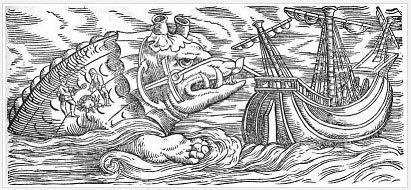

This is how the English navigator Walter Raleigh described the inhabitants of America:
men who have heads lower than their shoulders, and others with feet so large that they serve as a parasol,
some with three rows of teeth in each jaw, body of a bear, lion's legs, and scorpion's tail.

Conrad Gesner, 1558